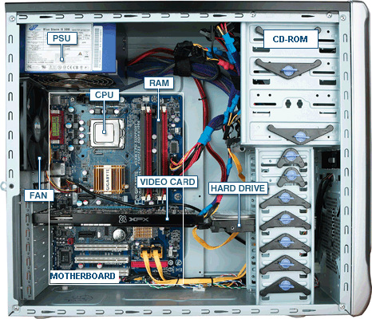
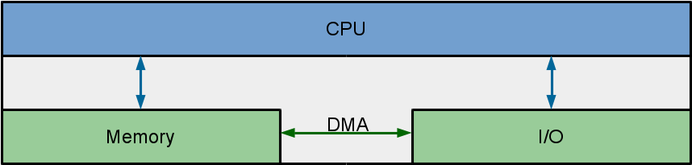
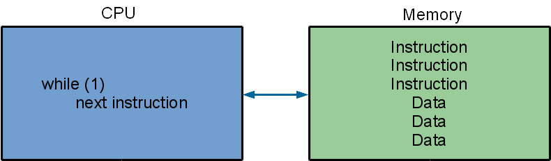
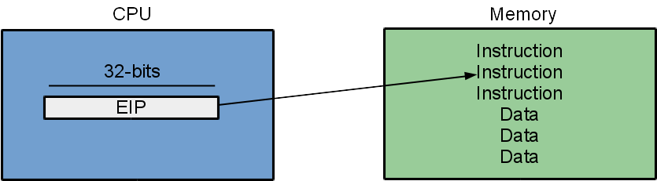
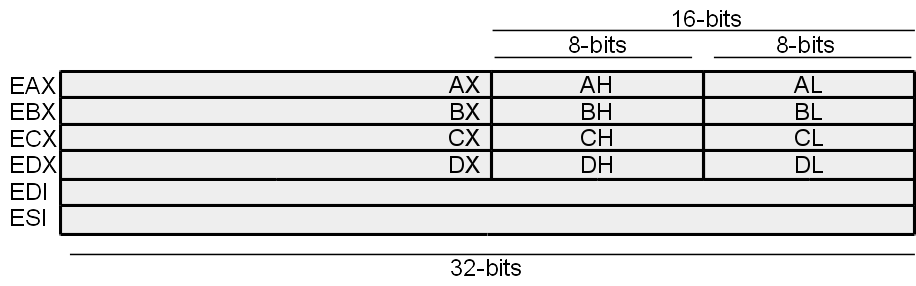
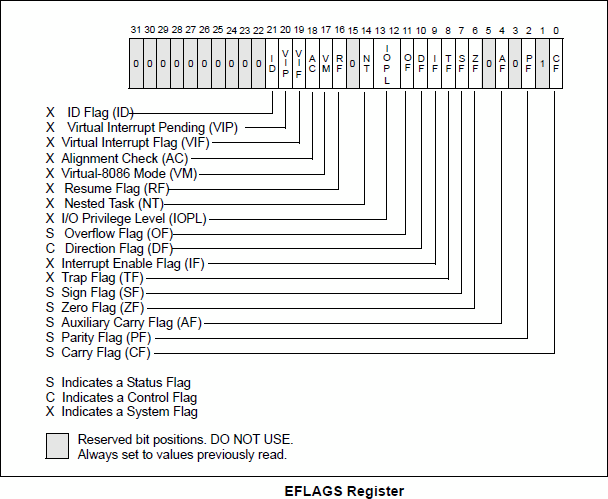

Introduction to x86
CS422/522 Lecture 2
29 August 2014
Last updated: 29 August 2014
Recap from Wednesday
- Shell code -- Done
- Started poking at Lab 1
- xv6, required
- optional textbook
- The website
Outline
- x86 Architecture
- The Boot Process
- Protection
- Wrap-Up
Defining a PC
Outside:
- A box
- monitor
- keyboard
- mouse
- Other I/O devices

Defining a PC
Inside that box:
- CPU
- Motherboard
- Memory
- Disk drives
- I/O cards: Network, Video
- Power supply

Abstract Model
- I/O: Communicating data to and from devices
- CPU: Logic for performing computation
- Memory: Storage
CPU / Memory Interaction
- Memory stores instructions and data
- CPU interprets instructions
x86 Implementation
- EIP points to next instruction
- Incremented after each instruction
- x86 instructions are not fixed length
- EIP modified by CALL, RET, JMP, and conditional JMP
General Purpose Registers (GPR)
- Temporary registers
- Contents may be changed by instructions
- Contents not changed by interrupts / exceptions / traps
- EDI/ESI used by string ops but also as GPR
Using GPRs
mov $0x10, %eax # eax = 0x10 add $0x10, %eax # eax = 0x20 sub $0x5, %eax # eax = 0x1b mov $0x2, %ebx mul %ebx # eax = 0x36
Segmentation Registers
- 8086 registers 16-bit w/ 20-bit bus addresses
- Solution: segment registers:
- CS: code segment, EIP
- SS: stack segment, ESP and EBP
- DS: data segment, register mem ops
- ES: string segment, string ops
- Linear address computation:
- EIP => CS:EIP = 0x8000:0x1000 = 0x81000
- ESP => SS:ESP = 0xF800:0x1000 = 0xF9000
- (EAX) => DS:EAX = 0xC123:0x1000 = 0xC2230
Even More Segmentation
- In protected mode:
- Segment registers point to descriptors
- Descriptors contain offsets, sizes, and permissions
- We'll talk about this a little bit more later
- In 32-bit and 64-bit mode, we don't need them.
Why? - Let's disable them! (shown later)
x86 Memory Operations
mov $4, %eax # eax = 4 mov $4, (%eax) # phys addr 4 = *4 = 4 mov $8, -4(%eax) # *0 = 8 mov (%eax), %ebx # ebx = 4 mov (%eax), (%ebx) # cannot do memory to memory mov -4(%eax, %ebx, 1), %ecx # ecx = *(eax - 4 + (ebx * 1)) = *4 = 4 mov $0x10, 4 # *4 = 0x10
The Stack
- Additional (temporary) storage
- Stack registers -- 32-bits long
- ESP - stack pointer
- EBP - base pointer
Using the Stack
_start: # esp = 0xffffdad0 push $0x50 # esp = 0xffffdacc *= 0x50 mov $0x10, %eax push %eax # esp = 0xffffdac8 *= 0x10 pop %ebx # esp = 0xffffdacc, ebx = 0x10 push $0x422 # esp = 0xffffdac8 *= 0x422 sub $4, %esp # esp = 0xffffdac4 *= ? mov %eax, (%esp) # esp = 0xffffdac4 *= 0x10
Using EBP
Commonly used by functions for backtrace:
push %ebp
mov %esp, %ebp
GCC calling convention
example: cprintf(char *fmt, ...)
+------------+
| arg 2 |
+------------+
| arg 1 |
+------------+
| ret %eip |
+------------+
| saved %ebp |
%ebp-> +------------+
| |
| |
| local |
| variables |
| |
| |
%esp-> +------------+
(E)FLAGS Register
Conditional jumps!
Using (E)FLAGS Register
mov $5, %ecx
mov $5, %edx
cmp %ecx, %edx # ZF = 1
je equal
...
equal:
...
Lot's of conditional jumps:
en.wikibooks.org/wiki/X86_Assembly/Control_Flow
What's Remaining?
- I/O interaction
- x86 protected mode
- x86 boot process
Let's take a look at xv6!
Outline
- x86 Architecture
- The Boot Process
- Protection
- Wrap-Up
Starting an OS
- Computer turns on, BIOS loads
What is a BIOS?
- The bootstrapper -- finds and initializes hardware
- Offers a common interface to hardware
- BIOS typically 16-bit
- BIOS exists on an EEPROM and not very big
Starting an OS
- Computer turns on, BIOS loads
- BIOS searches for disks
- Copies boot loader into 0x7c00
- Sets processor EIP to 0x7c00
- OS (bootloader) starts executing
- Problem: CPU starts executing in real mode:
simulated 8088 / 16-bit
Setting up 32-bit Mode
- Open xv6/bootasm.S: page 91 of xv6-rev7.pdf
- Disable interrupts: cli sets EFLAGS_IF = 0
- Create a Global Descriptor Table
- Enable protected mode in CRO_PE
- Load a new value into segment register
Global Descriptor Table
8441 lgdt gdtdesc
8480 # Bootstrap GDT
8481 .p2align 2 # force 4 byte alignment
8482 gdt:
8483 SEG_NULLASM # null seg
8484 SEG_ASM(STA_X|STA_R, 0x0, 0xffffffff) # code seg
8485 SEG_ASM(STA_W, 0x0, 0xffffffff) # data seg
8486
8487 gdtdesc:
8488 .word (gdtdesc − gdt − 1) # sizeof(gdt) − 1
8489 .long gdt # address gdt
Enable Protection
8442 movl %cr0, %eax
8443 orl $CR0_PE, %eax
8444 movl %eax, %cr0
Load the new segment
1150 ljmpl $(SEG_KCODE<<3), $(start32) # load gdt[1]
1151
1152 .code32
1153 start32:
Starting the Kernel
- Setup a stack:
8467 movl $start, %esp - Call into C loader:
8468 call bootmain - Load and start the kernel
xv6/bootmain.c or page 92 of xv6-rev7.pdf
Load and Start the Kernel
8516 void
8517 bootmain(void)
...
8524 elf = (struct elfhdr*)0x10000; // scratch space
8525
8526 // Read 1st page off disk
8527 readseg((uchar*)elf, 4096, 0);
...
8543 // Call the entry point from the ELF header.
8544 // Does not return!
8545 entry = (void(*)(void))(elf−>entry);
8546 entry();
I/O Devices
readseg reads from disk! How?
Reading a sector (512 bytes) from the disk at a time:
8560 readsect(void *dst, uint offset)
...
8563 waitdisk();
8564 outb(0x1F2, 1); // count = 1
8565 outb(0x1F3, offset);
....
8569 outb(0x1F7, 0x20); // cmd 0x20 − read sectors
...
8572 waitdisk();
8573 insl(0x1F0, dst, SECTSIZE/4);
outb and insl
Wrappers around assembly: outb(port, data) - out data, port - out %eax, %ebx insl is a string wrapper around in in(port, &data) - in data, port - in %eax, %ebxMemory Mapped I/O
Alternative to using in / out instructions:Use traditional instructions, like mov, on locations in memory
Assembly
We have spokenWe will only use AT&T syntx in class
Reading / using Intel syntax will not work
Example
int main(void)
{
return f(3) + 1;
}
int f(int x)
{
return x + 4;
}
_main:
pushl %ebp # prologue
movl %esp, %ebp
pushl $3 % body
call _f
addl $1, %eax
movl %ebp, %esp
popl %ebp
ret
_f:
pushl %ebp
movl %esp, %ebp
pushl %ebx # don't clobber registers
movl 8(%ebp), %ebx # access argument
addl $4, %ebx
movl %ebx, %eax
popl %ebx # restore
movl %ebp, %esp %epilogue
popl %ebp
ret
Outline
- x86 Architecture
- The Boot Process
- Protection
- Wrap-Up
x86 Protected Mode
We entered to turn on 32-bit mode. What else might it be useful for?- Process / code separation!
- Low privilege level cannot escape to higher privilege
- Cannot access other's memory
- Cannot change global PC state
- Limits instruction calls
What does it look like? How is that enforced?
Lower two bits of CS register
... and a topic for a later lecture ...
Observing Protected Mode
4 privilege levels: 0 - 3, highest to lowestx86 checks privilege level:
- I/O and privileged instructions
- Interrupts / Traps
- Accessing memory
But...
Segmentation has flaws, especially with memory holes for MM/IO...Our first descriptors define flat address at privilege level 0
Later we define a second set for users for a flat address space
Next Lecture: Page Tables, better management of memory
Outline
- x86 Architecture
- The Boot Process
- Protection
- Wrap-Up
UEFI
- BIOS issues:
- Old and 16-bits
- Limited support for hard disk sizes (< 2TB)
- Limited to EEPROM -- small in size
- UEFI advantages:
- Support for rich pre-boot environment
- Modern support for hard drives
- Secure boot
x86 Architecture in Qemu
- Qemu is an x86 emulator / virtual machine
- Qemu focuses on state not simulation
We won't be worrying about pipelines, superscalar, etc - Restricted to x86 instructions, CPU state, and memory
Testing Assembly Code
- In JOS:
Make your own monitor call and use asm volatile instructions - In Linux: ...
-
$ vim test.as
.global _start
.text
_start:
mov $0x10, %eax
mov %eax, %ebx
movl $1, %eax
int $0x80
$ as --386 -o test.o test.as $ ld -m elf_i386 -o test test.o $ ./test $ echo $?
16
$
Next Time
Wednesday 1:00PMPage Tables and Virtual Memory